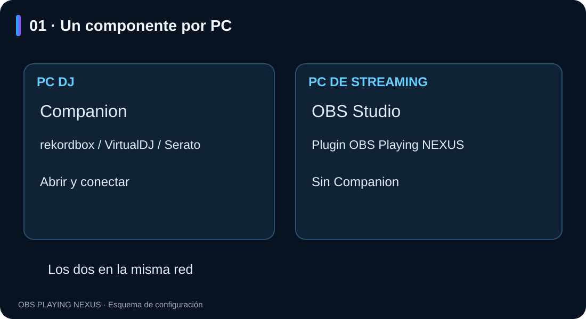
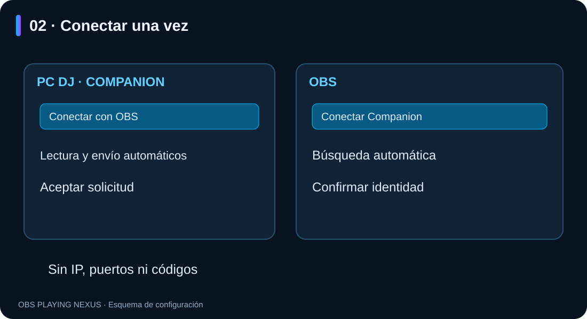
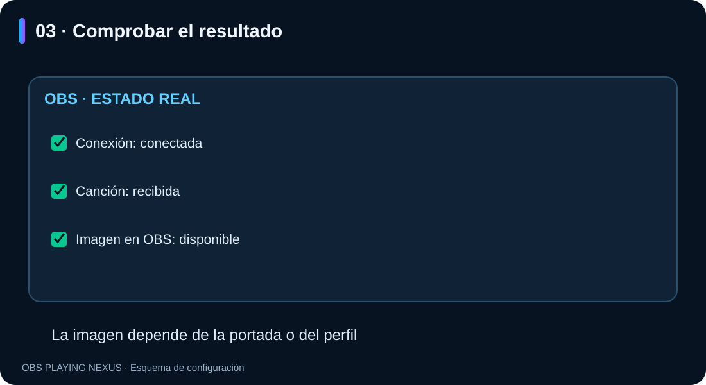

OBS Playing NEXUS — conectar tus dos PCs
Guía ilustrada · Windows · RC3.7
Español · English
Abre README.html con doble clic para leer la guía offline con imágenes. Conserva la carpeta imagenes junto al documento.
1. Instalar en cada PC
- PC DJ: instala Companion y abre tu programa DJ.
- PC de streaming: instala el plugin OBS Playing NEXUS y abre OBS Studio 32.x x64.
- No necesitas instalar Companion en el PC de streaming.
- Los dos equipos deben estar en la misma red doméstica.
- Actualiza ambos componentes a RC3.4 para seguir este asistente.
El mismo instalador permite elegir el componente para cada equipo. Companion crea un acceso directo en el escritorio. Cierra la aplicación correspondiente antes de actualizar; Windows puede solicitar permisos de administrador.

2. Conectar por primera vez
- En el PC DJ, abre Companion y pulsa Conectar con OBS. Deja abierta esa ventana.
- En el PC de streaming, añade una fuente OBS Playing NEXUS y pulsa Conectar Companion en sus propiedades. Desactiva el tema ficticio si estaba activo.
- OBS busca el PC DJ automáticamente. Si solo encuentra uno, lo selecciona. Comprueba que la identidad coincide con la del Companion, marca la confirmación y pulsa Conectar este PC.
- Acepta la solicitud en el Companion. La ventana de OBS mostrará la conexión real y si recibe canción e imagen.
No hay que copiar códigos, introducir IP o puerto, ni seleccionar un modo «PC de streaming» en Companion. El botón de OBS cambia automáticamente la fuente al PC DJ vinculado.

La lectura local y el inicio del envío se activan automáticamente en el asistente. En instalaciones nuevas ya están activados al abrir Companion. No necesitas marcar «Ver canción en este PC» o «Iniciar envío automáticamente» para conectarlo. Si hay varios programas DJ reproduciendo, elige el que quieras en la misma ventana.
El permiso de red de Windows, si aparece, se confirma en Windows. La vinculación queda abierta durante dos minutos; si caduca, pulsa Volver a buscar conexión en Companion y Buscar de nuevo en OBS. Cerrar el asistente del PC DJ cierra la ventana de vinculación; los equipos ya conectados siguen funcionando.
3. Uso diario y comprobación
Abre Companion en el PC DJ y OBS en el PC de streaming. La vinculación queda guardada y la fuente intenta reconectarse automáticamente cuando está activa. El inicio automático actúa al abrir Companion; no configura el inicio de Windows. El botón de detener sigue permitiendo parar el envío durante la sesión.
Reproduce música y cambia de canción. La ventana de OBS distingue conexión, canción recibida e imagen disponible. Una conexión puede funcionar aunque todavía no haya música o portada.

Para ver una portada, elige un estilo PRO y activa Mostrar portada / imagen de perfil. Si no hay portada, puedes usar el perfil de Twitch con la cuenta conectada en OBS y la alternativa de perfil activada. Los clásicos no llevan portada. Companion envía datos e imagen; no envía el audio.
4. Serato
En Serato, activa el dispositivo de OBS Playing en Setup → Expansion Packs → External Control. Este permiso pertenece a Serato y se confirma allí. Si el dispositivo no aparece, comprueba que Bonjour Service esté instalado y en ejecución en el PC DJ (Servizi → In esecuzione en Windows italiano). El panel de Companion indica si Bonjour falta o no responde.
5. Cambiar de PC o retirar una vinculación
En OBS, pulsa Conectar Companion → Cambiar PC DJ y sigue el mismo asistente. En Opciones avanzadas → Olvidar vinculación anterior puedes retirar el destino guardado y detener su conexión. Para quitar el permiso al PC anterior, usa Revocar vinculación seleccionada en los ajustes del Companion del PC DJ. Olvidar el destino en OBS no revoca el permiso guardado en el PC DJ.
6. Si algo falla
| Qué ocurre | Qué comprobar |
|---|---|
| OBS no encuentra Companion | Misma red, Companion abierto y «Conectar con OBS» abierto. Evita red de invitados o VPN entre los equipos. |
| Windows bloquea la conexión | En tu red doméstica privada, permite obs-playing-companion.exe en Firewall → Permitir una aplicación → Privada. El instalador no crea reglas de firewall. |
| Companion no muestra canción | Reproduce música y selecciona el programa DJ en el asistente si la detección automática es ambigua. En Serato revisa External Control y Bonjour. |
| Hay conexión pero no canción | Revisa primero la canción en Companion; no es necesariamente un fallo de red. |
| Hay canción pero no imagen | Comprueba la portada en Companion y las opciones de imagen de un estilo PRO. |
| Se ve una canción de ejemplo | Desactiva «Tema de prueba (ficticio)» en OBS. |
| Cambia la IP y no reconecta | Pulsa «Cambiar PC DJ» y vuelve a buscarlo. |
Ruta habitual del Companion para el permiso del firewall:
%LOCALAPPDATA%\OBS NEXUS\OBS Playing Companion\obs-playing-companion.exe7. Si falta una imagen
El asistente «Conectar Companion» distingue conexión, canción e imagen disponible. Para usar el perfil de Twitch, comprueba las tres opciones de imagen del bloque superior y que tu cuenta esté conectada en OBS. Si has vuelto a conectar Twitch, cierra y abre OBS para renovar la consulta.
Si tampoco hay portada en Companion, comprueba si está incrustada en el archivo local y su formato. Ver una miniatura en Serato no demuestra que el lector pueda obtenerla; esta versión no certifica portadas de servicios de streaming.
Para pedir ayuda, indica versiones y el mensaje visible. No compartas códigos, perfiles .pcs, contraseñas ni credenciales.
Las imágenes son esquemas del asistente, no capturas de una prueba entre dos PCs físicos.
Idiomas de la interfaz
Español, inglés, italiano, francés y alemán incluidos. El plugin sigue el idioma de OBS; Companion y el instalador siguen Windows. Otros idiomas usan inglés. Los nombres de estilos, tus presets y los datos musicales se conservan.
Panel único de ajustes
Desde RC3.6 hay un solo editor, sin selector Básico/Avanzado/Distribución. Conexión y opciones de portada están arriba, seguidas de programa/lectura, categoría/estilo, luz y movimiento, texto y alineación. Las pruebas de canción quedan al final. Los controles ajenos a estos bloques ya no se muestran; los valores guardados y presets anteriores se conservan.
Anunciar canciones en el chat de Twitch
En RC3.7, desde las propiedades de Playing NEXUS en el PC de streaming:
- Activa Anunciar canciones en el chat de Twitch. Empieza desactivado.
- Pulsa Conectar chat de Twitch…, después Autorizar chat de Twitch.
- Pulsa Abrir Twitch y autoriza la misma cuenta que usas para emitir en OBS. Si Twitch pide un código, usa el mostrado en la ventana. No compartas ese código.
- Personaliza Mensaje del chat con
{artist}y{title}. Ejemplo:🎵 Now playing: {artist} — {title}. - Ajusta la espera; por defecto son 3 segundos para que el cambio de canción se estabilice.
Solo envía mientras OBS transmite a Twitch, con una canción real y título y artista disponibles. Funciona tanto con el lector local como con Companion; no necesitas configurar el chat en el PC DJ. Los temas ficticios, las pausas y los cambios de portada no generan anuncios. Varias fuentes que muestran la misma canción producen un único mensaje. Si indican canciones diferentes, el anuncio queda en espera hasta que coincidan o quede una sola fuente habilitada.
Para detener los anuncios, desmarca la casilla en las fuentes donde la hayas activado. Se cancelan los mensajes pendientes; un mensaje ya recibido por Twitch no se puede retirar con este control. Desconectar chat en este equipo olvida la autorización local del chat sin desconectar la cuenta de emisión de OBS ni otros plugins.
La autorización del chat es independiente de la usada para la foto de perfil. Solo solicita permiso de escritura en el chat y se guarda protegida por Windows, nunca en la escena. Evita repetir la canción al mostrar otra escena o reconectar. Deja un mínimo de 10 segundos entre intentos y conserva el tema más reciente. Si Twitch no confirma un envío, no lo reintenta automáticamente. En una sesión de Shared Chat, Twitch puede mostrar el mensaje en los canales participantes según sus reglas.